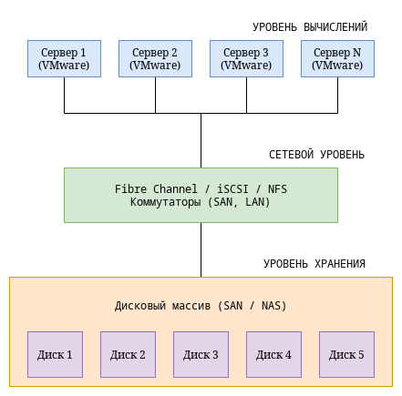
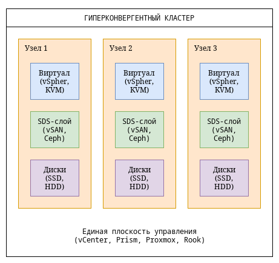

Лекция 9. Гиперконвергентные инфраструктуры (HCI)
и программно-определяемые хранилища (SDS)
Цель лекции: Сформировать понимание эволюции архитектур хранения,
объяснить принципы программно-определяемых хранилищ (SDS) и гиперконвергентных инфраструктур
(HCI), разобрать ключевые технологии (VMware vSAN, Nutanix, Ceph), сравнить подходы и выявить
сценарии применения.
Введение
За последние 10-15 лет архитектура центров обработки данных претерпела кардинальные изменения.
Если раньше мы строили инфраструктуру из трёх независимых "слоёв" — вычислений (серверы),
сети (коммутаторы) и хранения (дисковые массивы SAN/NAS), — то сегодня эти границы стираются.
Две ключевые концепции, которые меняют подход к построению инфраструктуры:
- SDS (Software-Defined Storage) — программно-определяемое хранилище,
где логика управления, защиты данных и предоставления доступа отделена от
физического оборудования.
- HCI (Hyperconverged Infrastructure) — гиперконвергентная
инфраструктура, где вычисления, хранение и сетевая виртуализация объединены в
едином программно-аппаратном комплексе, управляемом через единую плоскость.
Сегодня мы разберём, как эти технологии появились, чем они отличаются от традиционных подходов,
какие проблемы решают и где их применение оправдано, а где — нет.
Часть 1. Эволюция архитектур хранения
1.1 Традиционная архитектура: трёхуровневая модель
До появления SDS и HCI доминировала трёхуровневая архитектура (3-tier):

Проблемы трёхуровневой архитектуры:
- Сложность управления: Три разных слоя, каждый со своими инструментами
(администраторы серверов, сети, хранения).
- Неэффективное использование ресурсов: Вычислительные мощности и
хранилище часто не сбалансированы — одно перегружено, другое простаивает.
- Стоимость: Высокая стоимость дисковых массивов (SAN), особенно с
продвинутыми функциями.
- Масштабирование: Для расширения нужно увеличивать каждый слой
отдельно, часто с перерывом в работе.
- Изолированные пулы: Ресурсы хранения привязаны к конкретному массиву,
перемещение между массивами сложно.
1.2 Появление программно-определяемых хранилищ (SDS)
SDS (Software-Defined Storage) — это подход, при котором функции управления
хранилищем (выделение пространства, защита данных, репликация, дедупликация, сжатие) выносятся
из специализированного аппаратного контроллера в программный слой, работающий на стандартных
серверах.
Ключевые принципы SDS:
- Отделение плоскости управления от плоскости данных: Политики
управления не зависят от физического расположения данных.
- Абстракция физического оборудования: Однородное управление
разнородным железом.
- Автоматизация: Политики (квоты, QoS, защита) применяются
автоматически.
- Горизонтальное масштабирование: Добавление серверов увеличивает и
вычислительные мощности, и ёмкость хранения.
Примеры SDS:
- Ceph: Распределённая система хранения с тремя интерфейсами (блочный,
файловый, объектный).
- VMware vSAN: SDS-слой, встроенный в vSphere, превращающий локальные
диски серверов в общий пул хранения.
- Microsoft Storage Spaces Direct (S2D): SDS-решение для Windows
Server.
- Red Hat Ceph Storage, GlusterFS: Open Source SDS-решения.
1.3 От SDS к гиперконвергенции (HCI)
HCI (Hyperconverged Infrastructure) — это эволюция SDS, где вычисления,
хранение и сетевая виртуализация объединены в единый программно-аппаратный комплекс. В отличие
от SDS, который может работать на выделенных серверах хранения, HCI предполагает, что
каждый сервер одновременно является и вычислительным узлом, и узлом хранения.

Ключевые характеристики HCI:
- Каждый узел — это и сервер, и хранилище: Нет выделенных массивов
хранения.
- Распределённое хранилище: Данные реплицируются или кодируются
(erasure coding) между узлами.
- Единое управление: Один интерфейс для управления виртуальными
машинами, сетью и хранилищем.
- Линейное масштабирование: Добавление узлов увеличивает и
вычислительные мощности, и ёмкость хранения пропорционально.
Часть 2. Программно-определяемые хранилища (SDS) — глубокое погружение
2.1 Принципы SDS
1. Отделение управления от данных (Control Plane vs Data Plane):
- Control Plane: Управляющие функции — создание томов, политики
репликации, QoS, снапшоты. Может быть централизованным (как в vSAN) или
распределённым (как в Ceph).
- Data Plane: Непосредственная запись и чтение данных. Работает на
каждом узле и должна быть максимально производительной.
2. Политики вместо ручного управления:
В SDS администратор не назначает конкретные диски для тома. Вместо этого он задаёт
политику:
- Количество реплик (2 или 3).
- Минимальное количество узлов для записи.
- Квота на том.
- Класс хранения (SSD/HDD).
- Частота снапшотов.
Система сама размещает данные согласно политике.
3. Горизонтальное масштабирование (Scale-out):
В отличие от традиционных массивов (scale-up), которые расширяются заменой дисков на более ёмкие,
SDS расширяется добавлением узлов. Ёмкость и производительность растут линейно
с каждым новым сервером.
2.2 Механизмы защиты данных в SDS
1. Репликация (Replication):
- Данные копируются на N узлов (обычно 2 или 3).
- При отказе одного узла, данные доступны на другом.
- Плюсы: Простота, предсказуемая производительность.
- Минусы: Накладные расходы на ёмкость (3 копии = 300% полезного
места).
2. Erasure Coding (EC) — кодирование с коррекцией ошибок:
- Данные разбиваются на фрагменты (k), к ним добавляются проверочные фрагменты (m).
Общая формула: k+m.
- Пример: 4+2 — 4 фрагмента данных, 2 проверочных. Объём полезного места = 4/6 = 67%
от физического.
- Плюсы: Экономия места по сравнению с репликацией.
- Минусы: Более сложная реализация, накладные расходы на вычисления
при восстановлении.
3. Locality и Failure Domains:
SDS позволяет задавать домены отказов:
- Уровень диска: Отказ одного диска.
- Уровень узла: Отказ целого сервера.
- Уровень стойки (rack): Отказ всей стойки (например, отключение
питания).
- Уровень дата-центра: Географическая избыточность.
2.3 Кэширование и tiering
SDS-системы активно используют кэширование для повышения производительности:
- Кэш на SSD/NVMe: Часто используемые данные хранятся на быстрых
носителях.
- Write-back vs Write-through: При write-back кэше данные сначала
пишутся на SSD, а затем асинхронно сбрасываются на HDD.
- Автоматическое перемещение данных (tiering): Данные, к которым редко
обращаются, перемещаются на более медленные (и дешёвые) носители.
2.4 Сравнение SDS-решений
| Характеристика |
VMware vSAN |
Ceph |
Microsoft S2D |
Dell EMC PowerFlex |
| Тип |
Интегрирован в vSphere |
Open Source, независимая |
Часть Windows Server |
Аппаратно-независимое ПО |
| Гипервизор |
vSphere (ESXi) |
KVM, VMware, Hyper-V (через RBD) |
Hyper-V |
Любой (VMware, KVM, bare metal) |
| Защита данных |
Репликация, EC (vSAN OSA/ESA) |
Репликация, EC |
Репликация, EC |
Репликация |
| Кэширование |
Dedicated cache tier |
RocksDB + OSD cache |
NVMe cache |
RAM + SSD |
| Масштабирование |
До 64 узлов |
До тысяч узлов |
До 16-24 узлов |
До сотен узлов |
| Особенности |
Простота, интеграция с vSphere |
Гибкость, три интерфейса |
Интеграция с Windows |
Высокая производительность |
Часть 3. Гиперконвергентные инфраструктуры (HCI) — глубокое погружение
3.1 Что такое HCI на самом деле?
HCI — это не просто технология, а архитектурный подход, при котором:
- Вычислительные ресурсы (CPU, RAM) и ресурсы хранения (диски) находятся в одних и тех
же узлах.
- Управление осуществляется через единую программную плоскость (обычно веб-интерфейс
или API).
- Масштабирование происходит путём добавления целых узлов (вычислительных и дисковых
ресурсов одновременно).
3.2 Компоненты HCI
1. Гипервизор (Hypervisor):
- Виртуализирует вычислительные ресурсы.
- Примеры: VMware ESXi (в составе vSAN), KVM (в
Nutanix AHV, Proxmox), Hyper-V (в Azure Stack HCI).
2. Распределённое SDS-ядро (Distributed Storage Fabric):
- Объединяет локальные диски всех узлов в единый пул.
- Обеспечивает репликацию, erasure coding, снапшоты, дедупликацию.
3. Плоскость управления (Management Plane):
- Единый интерфейс для управления всеми компонентами.
- Примеры: vCenter для vSAN, Prism для Nutanix, Proxmox Web GUI.
4. Сетевой уровень (Networking):
- Объединяет узлы в кластер.
- Требует высокой пропускной способности (обычно 10/25/100 GbE).
3.3 Ключевые игроки на рынке HCI
1. VMware vSAN:
- Доля рынка: Лидер среди коммерческих HCI-решений.
- Архитектура: Интегрирован в vSphere. Диски каждого ESXi-хоста
объединяются в vSAN Datastore. Использует политики хранения (Storage Policies)
на уровне VMDK.
- Режимы:
- OSA (Original Storage Architecture): Классическая архитектура
с выделенным кэшем и ёмкостным уровнем.
- ESA (Express Storage Architecture): Новая архитектура для
NVMe, с лучшей производительностью и EC.
2. Nutanix:
- Архитектура: Acropolis — платформа управления, включающая гипервизор
AHV (на основе KVM) и распределённую файловую систему NDFS (Nutanix Distributed
File System).
- Особенности: Сильный фокус на простоте управления, встроенная защита
данных, возможность работы с VMware ESXi и Hyper-V.
3. Microsoft Azure Stack HCI:
- Архитектура: Базируется на Windows Server с Storage Spaces Direct
(S2D).
- Особенности: Глубокая интеграция с Azure (облачные бэкапы, управление
из портала Azure). Оптимизирован для Hyper-V.
4. Open Source решения:
- Proxmox VE: Встроенный Ceph как опция. Простое развёртывание,
веб-интерфейс.
- Rook + Ceph + Kubernetes: HCI-подход в мире контейнеров (Kubernetes
— управление, Ceph — хранение, Rook — оркестрация).
- OpenStack + Ceph: Классическая комбинация для построения частного
облака.
3.4 HCI vs традиционная архитектура: сравнение
| Характеристика |
Традиционная 3-tier |
HCI |
| Структура |
Серверы + отдельный массив хранения |
Унифицированные узлы |
| Управление |
Несколько интерфейсов (серверы, массив, сеть) |
Единая плоскость управления |
| Масштабирование |
Scale-up (массив) + scale-out (серверы) |
Scale-out (добавление узлов) |
| Производительность |
Предсказуемая, но ограничена массивом |
Распределённая, растёт с узлами |
| Стоимость начальная |
Высокая (дорогой массив) |
Средняя (стандартные серверы) |
| Стоимость масштабирования |
Нелинейная (массив+серверы) |
Линейная (цена за узел) |
| Отказоустойчивость |
На уровне массива (RAID, репликация) |
На уровне кластера (репликация между узлами) |
| Сложность |
Высокая (разные команды) |
Средняя (одна экосистема) |
| Гибкость |
Низкая (связанность с вендором) |
Средняя (стандартные компоненты) |
Часть 4. HCI для виртуализации: архитектурные особенности
4.1 Управление политиками хранения
В HCI (особенно в vSAN) управление хранилищем осуществляется через политики (Storage
Policies). Политика может быть назначена на каждую виртуальную машину или даже на
отдельный VMDK.
Пример политики vSAN:
- Число отказов (Failures to tolerate): 1 (выдерживает отказ одного
узла)
- Метод защиты: Репликация (vs Erasure Coding)
- Количество полос (Stripes): 2 (чередование для производительности)
- Кэширование: Flash Read Cache (резервирование)
- Квота: 100 GB
Преимущество: Администратор не думает о том, где физически размещены данные
— система сама распределяет их согласно политике.
4.2 Схемы размещения данных
1. RAID-1 (Replication):
2. RAID-5/6 (Erasure Coding):
- Данные кодируются и распределяются.
- FTT=1 → 2+1 (2 данных, 1 четность) — эффективность 66%.
- FTT=2 → 4+2 — эффективность 66%.
- Использование: Большие объёмы данных, где важна экономия места.
3. Пространственная эффективность (Space Efficiency):
Современные HCI поддерживают:
- Дедупликация (Deduplication): Удаление дублирующихся блоков
(эффективно для ВМ с одинаковыми ОС).
- Сжатие (Compression): Сжатие данных на уровне кластера.
- Тонкое выделение (Thin Provisioning): Виртуальный диск занимает
только записанное место.
4.3 Сетевые требования
HCI предъявляет высокие требования к сети, так как каждый узел обменивается данными со всеми
остальными (внутренний трафик репликации).
Рекомендации:
- Минимум 10 GbE (25 GbE предпочтительнее).
- Разделение сетей: Выделенная сеть для хранения (storage network)
и управляющая сеть (management).
- Jumbo Frames: MTU 9000 для снижения оверхеда.
- RoCE / RDMA: При возможности — для снижения загрузки CPU.
4.4 Живая миграция и отказоустойчивость
HCI позволяет:
- vMotion (vSphere) / Live Migration (KVM): Перемещение работающих ВМ
между узлами без остановки.
- HA (High Availability): При отказе узла, ВМ автоматически
перезапускаются на других узлах.
- FT (Fault Tolerance): Непрерывная работа ВМ при отказе узла
(асинхронная репликация состояния).
Часть 5. Ceph как пример открытой SDS/HCI-платформы
Ceph — это одна из самых мощных и гибких открытых SDS-платформ. Она может работать как в режиме
выделенного хранилища (отдельные серверы для хранения), так и в гиперконвергентном режиме (каждый
сервер и вычисляет, и хранит).
5.1 Архитектура Ceph
1. RADOS (Reliable Autonomic Distributed Object Store):
- Ядро Ceph, распределённое хранилище объектов.
- Компоненты:
- OSD (Object Storage Daemon): Демон на каждом диске,
отвечающий за хранение данных.
- MON (Monitor): Обеспечивает консенсус, хранит карту
кластера.
- MGR (Manager): Сбор метрик, дашборд, модули.
2. CRUSH (Controlled Replication Under Scalable Hashing):
- Алгоритм вычисления, где и как хранить данные.
- В отличие от традиционных систем, Ceph не использует центральную таблицу размещения.
CRUSH вычисляет расположение объекта по хэшу от его ID.
- Преимущество: отсутствие единой точки отказа, линейное масштабирование.
3. Три интерфейса доступа:
- RADOS Block Device (RBD): Блочный доступ (для виртуализации).
- CephFS: Файловый доступ (POSIX-совместимая ФС).
- RADOS Gateway (RGW): Объектный доступ (S3 / Swift API).
5.2 Hyperconverged Ceph (для виртуализации)
Ceph может работать в двух режимах:
1. Выделенное хранилище:
- Отдельные серверы — OSD-ноды (только диски, без виртуализации).
- Отдельные серверы — вычислительные ноды (гипервизоры).
- Подключение через RBD (iSCSI или напрямую через librbd).
2. Гиперконвергентный (Hyperconverged):
- Один сервер выполняет обе роли: и гипервизор, и OSD.
- Преимущество: Экономия места, простота.
- Вызов: Нужно тщательно управлять ресурсами, чтобы виртуальные
машины не "отобрали" память/CPU у OSD.
5.3 Ceph vs vSAN: сравнение
| Характеристика |
VMware vSAN |
Ceph |
| Лицензия |
Коммерческая |
Open Source (LGPL) |
| Интеграция с гипервизором |
Только vSphere |
KVM (через RBD), VMware (через iSCSI или RBD), Hyper-V |
| Сложность установки |
Низкая (через vCenter) |
Высокая (требует опыта) |
| Сложность эксплуатации |
Низкая |
Высокая |
| Масштабируемость |
До 64 узлов |
Тысячи узлов |
| Производительность |
Очень высокая |
Высокая (требует настройки) |
| Функциональность |
Сфокусирован на vSphere |
Три интерфейса (блок, файл, объект) |
| Стоимость |
Зависит от лицензий |
Только поддержка (опционально) |
Часть 6. Когда выбирать HCI и SDS?
6.1 Сценарии, где HCI и SDS превосходят традиционные подходы
- Виртуализация VDI (Virtual Desktop
Infrastructure):
- Требует линейного масштабирования (добавляем узлы по мере роста числа рабочих
мест).
- Дедупликация и сжатие дают высокую эффективность (десятки одинаковых ВМ с
Windows).
- Частное облако (Private Cloud):
- Необходима автоматизация выделения ресурсов.
- HCI предоставляет единый API для управления всем стеком.
- Edge-вычисления (ROBO — Remote Office / Branch Office):
- Ограниченное пространство, нет возможности разместить отдельный дисковый
массив.
- HCI позволяет развернуть полноценную инфраструктуру в 2-4 серверах.
- Разработка и тестирование:
- Гибкость, быстрое развёртывание окружений.
- Возможность использовать commodity-серверы вместо дорогих массивов.
- Модернизация устаревшей инфраструктуры:
- Замена устаревших SAN с высокими затратами на поддержку.
- Переход на стандартные серверы и SDS.
6.2 Сценарии, где традиционная архитектура всё ещё предпочтительнее
- Высоконагруженные базы данных (OLTP):
- Требуют максимальной производительности и предсказуемой задержки.
- HCI может дать "шумных соседей" (noisy neighbors) из-за конкуренции
за ресурсы.
- Крупные SAN-среды (более 500-1000 ВМ):
- В очень крупных масштабах специализированные SAN-массивы могут быть
эффективнее.
- HCI может столкнуться с сетевыми ограничениями.
- Строгие требования к согласованности (consistency):
- Некоторые HCI-системы (особенно на основе репликации) могут иметь задержки
при синхронной записи.
- Уже существующая стандартизация:
- Если в компании есть огромный опыт работы с Dell EMC или NetApp, переход на
HCI может не оправдать затраты на переобучение.
6.3 Гибридный подход: HCI + SAN
Многие организации используют гибридный подход:
- HCI для VDI, тестирования, некритичных ВМ.
- Традиционный SAN для критических баз данных и корпоративных
приложений.
Также существуют решения, позволяющие подключать внешнее SAN к HCI-кластеру (например, vSAN
с поддержкой внешних массивов через vVols).
Часть 7. Будущее HCI и SDS
7.1 Контейнеризация и HCI
Kubernetes меняет ландшафт. Появляются концепции:
- Hyperconverged Kubernetes: K8s-кластер, где узлы одновременно
являются и вычислительными, и хранилищными (Ceph через Rook).
- vSphere with Tanzu: VMware интегрирует K8s в vSphere, превращая
vSAN в хранилище для контейнеров.
7.2 HCI в публичных облаках
AWS, Azure и Google предлагают HCI-подобные сервисы:
- AWS Outposts: Аппаратные стойки AWS в вашем дата-центре.
- Azure Stack HCI: HCI-решение Microsoft с интеграцией в Azure.
- Google Distributed Cloud: Гибридное решение Google.
7.3 NVMe-oF и HCI
Появление NVMe over Fabrics (NVMe-oF) позволяет строить HCI с ещё более низкой задержкой.
Диски NVMe могут быть разделены между узлами по сети с задержкой, близкой к локальной.
7.4 DPU (Data Processing Unit) в HCI
Специализированные процессоры (NVIDIA BlueField, AMD Pensando) разгружают CPU от задач хранения
и сети, позволяя HCI-кластерам достигать производительности, ранее доступной только выделенным
массивам.
Резюме и вопросы
Ключевые выводы:
- SDS (Software-Defined Storage) — это подход, при котором функции
хранения выносятся из специализированного оборудования в программный слой,
работающий на стандартных серверах.
- HCI (Hyperconverged Infrastructure) — это эволюция SDS, где
вычисления, хранение и сеть объединены в едином кластере с единой плоскостью
управления.
- Ключевые преимущества HCI: простота управления, линейное масштабирование, снижение
CAPEX за счёт использования commodity-серверов.
- Основные игроки: VMware vSAN (лидер в интеграции с vSphere),
Nutanix (сильный фокус на простоте), Ceph
(открытое решение для крупных масштабов), Microsoft Azure Stack
HCI (интеграция с облаком).
- HCI идеально подходит для VDI, частных облаков, ROBO-сегментов. Для высоконагруженных
баз данных традиционная архитектура всё ещё может быть предпочтительнее.
- Будущее HCI связано с контейнеризацией, NVMe-oF и DPU.
Вопросы для самопроверки:
- В чём разница между трёхуровневой архитектурой и гиперконвергентной?
- Какие принципы лежат в основе SDS?
- Что такое политики хранения (storage policies) и зачем они нужны в HCI?
- Как работает репликация данных в HCI? В чём отличие от erasure coding?
- Какие существуют домены отказов (failure domains) в HCI?
- Сравните vSAN, Nutanix и Ceph: в каких сценариях каждый из них предпочтительнее?
- Какие требования предъявляются к сети в HCI-кластере?
- В каких случаях традиционная архитектура с отдельным SAN всё ещё лучше HCI?
- Как HCI связана с Kubernetes и контейнерами?
- Что такое CRUSH в Ceph и почему он важен?
На следующих двух практических
занятиях мы:
- Развернём Ceph кластер в контейнерах (cephadm) или на виртуальных машинах.
- Создадим пулы хранения, RBD-образы и подключим их к виртуальным машинам.
- (Опционально) Попробуем развернуть простой HCI-подобный кластер на основе
Proxmox VE и Ceph.
- Имитируем отказ узла и наблюдаем за самовосстановлением данных.